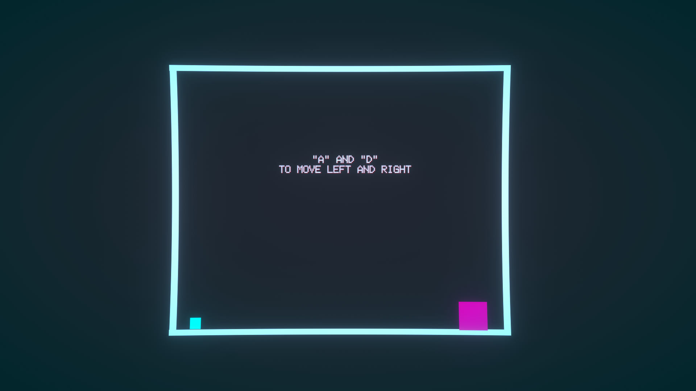
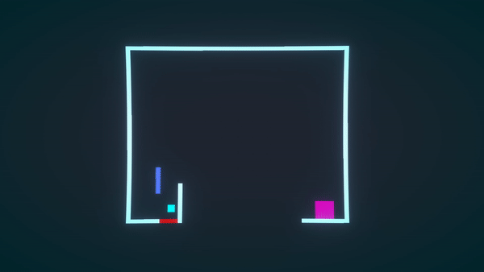

Tämä oli ensimmäinen kunnon projekti minkä tein yksin vapaa-ajallani. Pelin ideana oli että erivärisillä alustoilla on eri ominaisuudet.
Tämä oli ensimmäinen kunnon projekti minkä tein yksin vapaa-ajallani. Pelin ideana oli että erivärisillä alustoilla on eri ominaisuudet.


2D-tasohyppelipelin jälkeen halusin testailla eri genrejä, joten päätin kokeilla top-down shooter pelin tekemistä. Halusin että pelissä pelaaja voisi päivittää asetta, ja että päivitykset toimisivat toistensa kanssa.

Tämä projekti oli koulutehtävä jonka tein kahden muun henkilön kanssa. Pelin ideana oli että pelaajan täytyisi ohjata kameroita ja robotteja joilla pitäisi selvittää pulma. Tein projektiin pelin päämekaniikan eli kameroiden ja muiden robottien ohjaamisen. Projekti jäi vähän kesken sillä meillä ei riittänyt aika tehdä parempaa valaistusta tai teksturoida objekteja ja kenttää.


Puhelinpeli oli ensimmäisen vuoden viimeinen koulutehtävä. Peli on sandbox/destruction peli, jossa pelaaja voi leikkiä palikoilla ja hajottaa niitä. Tein pelin kahden henkilön ryhmässä, jossa minä tein suurimman osan päämekaniikoista kuten grid-systeemin, palikoiden yhdistämisen ja aseiden mekaniikat, kun taas ryhmäläiseni teki graafiset jutut kuten tekstuurit ja UI-elementit.